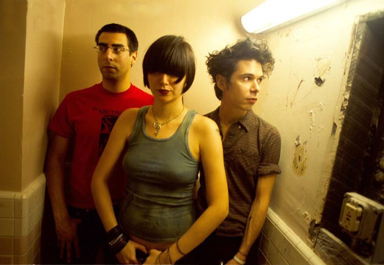

Yeah Yeah Yeahs: Blitzing the dancefloor



With its striking cover image of a smashing egg having almost obtained iconic status already, Yeah Yeah Yeahs’ It’s Blitz! promises to be one of the most talked about records of the year. The blogosphere has been alight with discussion of its relatively lush, dance-friendly sound.
All kinds of of unlikely influences have been suggested, from Donna Summer to New Order. For Brian Chase, the group’s drummer, the move towards a more electronic, synth-laden sound was way of both exploring new territory and subverting the band’s fiery art-punk image. “Dance music is always much more cool and detached and that was something that appealed to us,” he explains.
For all the alarmed headlines about the three-piece having ‘gone disco’, however, Yeah Yeah Yeahs have always been a band that confounds expectations. After all, who expected the tenderness of Maps after the sex, death and sneering of their first two EPs? Chase agrees that creative right-turns have always been part of their ‘modus operandi’. “We’ve always tried to be in touch with where we are at the moment. I don’t think we could repeat ourselves even if we wanted to. We just try and keep ahead of the curve; stay right on the edge.”
One constant from previous records, however, is the presence of TV On The Radio prodigy Dave Sitek, who also appeared as producer on the band’s previous two full-lengths. While veteran Nick Launay worked with the band through the songwriting process, they were reunited with Sitek during the latter stages of making the record and once again relished his unpredictable approach. “He has no fear,” Chase enthuses. “He has a wild imagination, and he uses the studio like it’s a toy. Once you’re in a studio with Dave Sitek, you never know what you’re going to get.”
With anticipation for their third album proper reaching fever point, the group made a conscious decision to escape the hype. They headed to isolated locations such as a barnyard in Massachusetts, to work without distractions. As has become almost inevitable in these impatient times, however, their efforts were leaked on the internet before the release date, pushing the official release date forward to compensate.
”It’s kind of like Christmas is around the corner,” Chase says by way of analogy .“Maybe a week or two away… and you manage to find the presents that your parents were hiding and you’re like, ‘Oh, I’m not going to wait, I’m just going to open my presents now!’ So there’s a little bit of disappointment that comes with that.”
More happily, the band are raring to return to the live arena. In that context, Karen O’s wild charisma, Chase’s powerhouse drumming – informed by both his jazz training and his love of punk rock – and the freewheeling guitar work of Nick Zinner (“just an incredible noisemaker”) are a force to be reckoned with.
Upcoming performances may well include their cover of The Ramones’ Sheena is a Punk Rocker amongst the new songs. The classic punks rate as Chase’s all-time favourite band and recording the cover (for the War Child Heroes charity compilation) proved pure fun, with the memory of Karen trying to impersonate Johnny Ramone’s snarl still raising a laugh.
Yeah Yeah Yeahs live shows in this country have rarely been short of sensational. Many remember a gig at Sydney’s Metro Theatre that ended abruptly when Karen O’s penchant for throwing herself around stage resulted in an injury, and the triumphant sequel at Livid festival, where she was wheeled onto the stage in a wheelchair in a grand piece of rock and roll theatre.
The shows in support of the Show Your Bones LP are still spoken of in hushed tones by those fortunate enough to have been there. So is a return this year on the cards ? “It’s very, very likely,” Chase offers. “Yeah, very, very likely. I think that’s all I can say.”
It’s Blitz is out now on Modular through Universal.